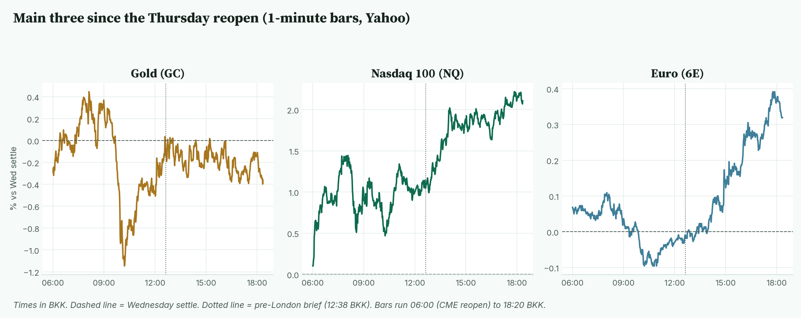
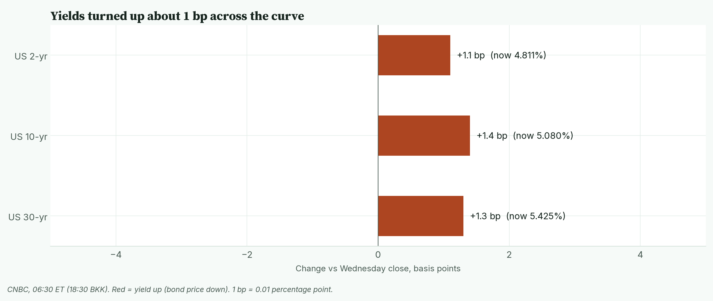
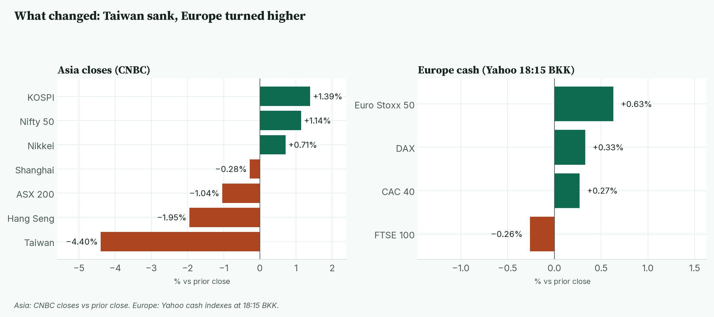
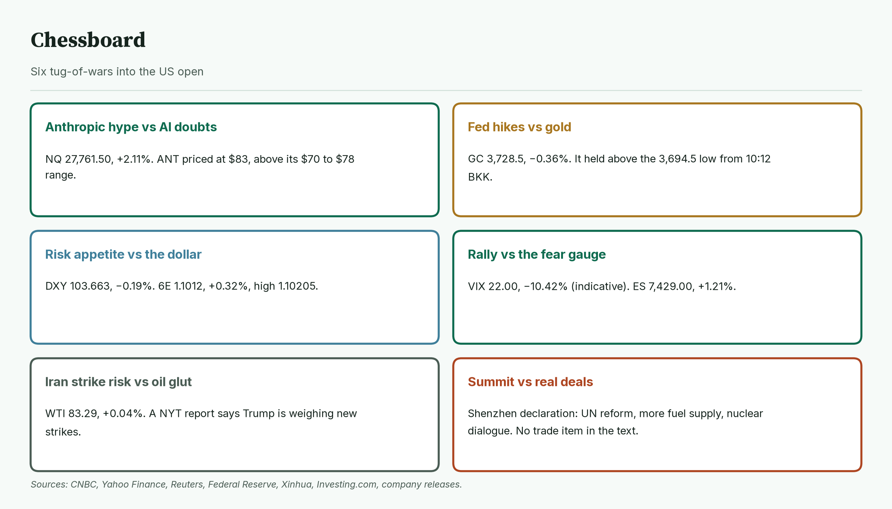
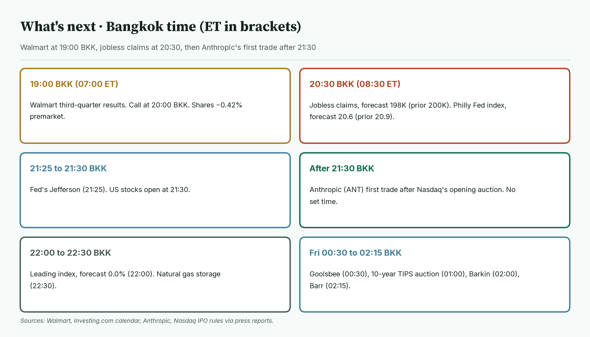
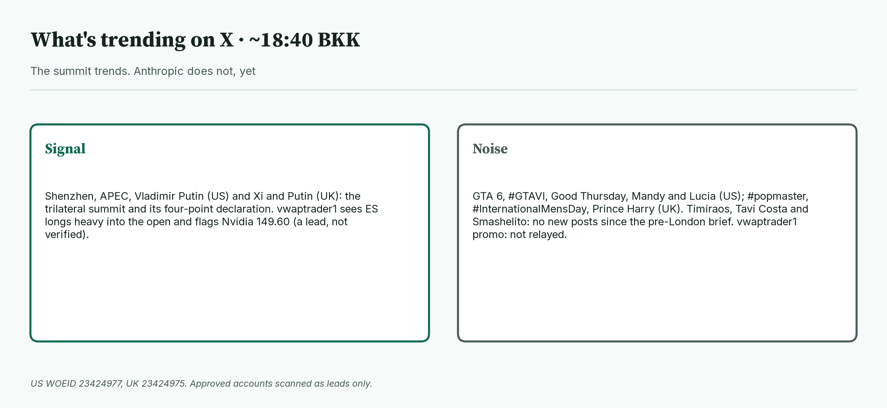

April · Market Intel, pre-NY · Thu Nov 19, 2026 · ~18:40 BKK / ~06:40 New York
Headline: Nasdaq futures doubled their gain since London to 27,761.50 (+2.11%) on the Anthropic IPO buzz. Gold futures are 3,728.5 (−0.36%), above the 3,694.5 low. Euro futures rose to 1.1012 (+0.32%) as the dollar eased. Jobless claims at 20:30 BKK and Anthropic's first trade after 21:30 BKK decide the session.
So what: risk appetite is back for one morning. Tech is betting on a strong debut, while gold still cannot rally against a Fed set to hike.
 Caption: Futures at 18:20 BKK versus Wednesday's settle. Nasdaq leads, and the fear gauge is down sharply. The VIX is an indicative pre-open print.
Caption: Futures at 18:20 BKK versus Wednesday's settle. Nasdaq leads, and the fear gauge is down sharply. The VIX is an indicative pre-open print.
1) Main instruments The three main contracts since the Thursday reopen, as a % move from Wednesday's settle. Nasdaq and the euro climbed after London opened. Gold drifted back toward flat. |
 Caption: The three main contracts since the Thursday reopen, as a % move from Wednesday's settle. Nasdaq and the euro climbed after London opened. Gold drifted back toward flat.
(Quotes are Yahoo Finance futures at 18:20 BKK (06:20 New York), matching CNBC. Session highs and lows use Yahoo 1-minute bars from the 06:00 BKK CME reopen (18:00 New York Wednesday). The first bar is 06:00 BKK.)
Caption: The three main contracts since the Thursday reopen, as a % move from Wednesday's settle. Nasdaq and the euro climbed after London opened. Gold drifted back toward flat.
(Quotes are Yahoo Finance futures at 18:20 BKK (06:20 New York), matching CNBC. Session highs and lows use Yahoo 1-minute bars from the 06:00 BKK CME reopen (18:00 New York Wednesday). The first bar is 06:00 BKK.)
- Gold futures (GC, Dec): 3,728.5, −0.36%, at 18:20 BKK. Driver: the hawkish Fed minutes still weigh, and the bounce from the morning dip has faded (Federal Reserve, CNBC). Wednesday's settle was 3,741.9. Today's range is 3,694.5 (10:12 BKK) to 3,759.5 (08:07 BKK). It is down from 3,738.5 at the pre-London brief. Spot gold is 3,729.28 (CNBC, 18:30 BKK).
- Nasdaq 100 futures (NQ, Dec): 27,761.50, +2.11%, at 18:20 BKK. Driver: Anthropic priced its IPO at $83, above range, reviving the beaten-down AI trade (Reuters via Investing.com). Wednesday's settle was 27,186.75. Today's range is 27,169.00 (06:00 BKK) to 27,792.50 (17:51 BKK). It is up from 27,475.25 at the pre-London brief, near the session high.
- Euro futures (6E, Dec): 1.1012, +0.32%, at 18:20 BKK. Driver: the dollar eased as stocks rallied (CNBC). Wednesday's settle was 1.0977. Today's range is 1.0966 (10:16 BKK) to 1.10205 (17:47 BKK). It broke above the pre-London high of 1.0989.
- Takeaway: Nasdaq and the euro made new highs after London opened. Gold is the laggard.
Context. The dollar index (DXY, the dollar against six major currencies) is 103.663, −0.19% (CNBC, 18:30 BKK). The 10-year US yield (what the US government pays to borrow for 10 years) is 5.080%, up 1.4 basis points (CNBC, 18:30 BKK; a basis point is 0.01 percentage point). The VIX (the "fear gauge" built from S&P 500 option prices) is 22.00, −10.42% (CNBC, 18:30 BKK, an indicative pre-open print; Yahoo shows 22.01). US oil (CL, December) is 83.29, +0.04% (CNBC, 18:18 BKK). S&P 500 futures (ES) are 7,429.00, +1.21% (Yahoo, 18:20 BKK). Bitcoin is $63,834, +2.13% versus CNBC's previous close (CNBC/Coin Metrics, 18:30 BKK).
2) Premarket earnings and movers
- Chips and AI names lead the premarket. Prices are Yahoo premarket at 18:27 to 18:30 BKK.
- Micron +5.33%, Intel +4.76%, AMD +3.31%, Broadcom +3.13%, Nvidia +1.93%. Alphabet is +3.88% and Amazon +2.46%. Both hold large Anthropic stakes (investingLive).
- Palo Alto Networks +9.23% at 371.30. Quarterly revenue rose 39% to $3.44 billion. Adjusted earnings were $1.05 a share against $0.97 expected. It raised its full-year revenue outlook to $14.52 to $14.57 billion and is buying AI startup Applied Compute for $4.5 billion (company release, CNBC).
- Walmart is −0.42% at 126.82 ahead of its results at 19:00 BKK.
- Mentor: an IPO is a company's first sale of shares to the public. A strong debut can lift the whole sector, because it tells investors big buyers still want AI at high prices.
- Takeaway: the premarket is one big AI vote of confidence. The Anthropic open tests it.
3) Rates, FX and oil Yields turned up about 1 basis point across the curve. The Asian-hours dip has reversed. |
 Caption: Yields turned up about 1 basis point across the curve. The Asian-hours dip has reversed.
Caption: Yields turned up about 1 basis point across the curve. The Asian-hours dip has reversed.
- CNBC, 18:30 BKK: 2-year 4.811% (+1.1 bp), 10-year 5.080% (+1.4 bp), 30-year 5.425% (+1.3 bp). The 10-year was 5.052% at the pre-London brief.
- Dollar. DXY is 103.663, down from 103.877 at the pre-London brief. EUR/USD is 1.0998 (CNBC, 18:30 BKK).
- Yen. USD/JPY is 159.89, +0.35% (CNBC, 18:30 BKK), still just under 160. BOJ Governor Ueda said again he is ready to tighten further (Dow Jones via Morningstar).
- Oil. WTI (December) 83.29 and Brent (January) 91.94, −0.01% (CNBC, 18:18 to 18:20 BKK). CNBC's session ranges are WTI 82.65 to 83.90 and Brent 91.21 to 93.09.
- Iran risk. The New York Times reports Trump is weighing new strikes on Iran. No decision has been made (NYT via Bloomberg, Axios).
- Takeaway: oil is stuck between strike risk and a supply glut. Yields are creeping up again.
4) Why it matters Taiwan sank while Korea and India gained. Europe turned higher with US futures. |
 Caption: Taiwan sank while Korea and India gained. Europe turned higher with US futures.
Caption: Taiwan sank while Korea and India gained. Europe turned higher with US futures.
- Asia closed split: KOSPI +1.39%, Nifty +1.14%, Nikkei +0.71%, Shanghai −0.28%, ASX 200 −1.04%, Hang Seng −1.95%, Taiwan −4.40% (CNBC).
- Europe is higher. Euro Stoxx 50 +0.63%, DAX +0.33%, CAC 40 +0.27%, FTSE 100 −0.26% (Yahoo, 18:15 BKK).
- The Shenzhen summit ended with a four-point declaration. The US, China and Russia agreed to pursue UN reform, raise refined fuel supply and start a nuclear-risk dialogue (Xinhua, Kremlin). There was no trade item in the text.
- Mentor: the fuel pledge matters for oil. More refined fuel supply would ease prices at the pump, but it is a plan, not a number.
- Takeaway: New York opens with tech hopeful, the dollar softer and gold still on the defensive.
5) Chessboard Six tug-of-wars into the US open. The Anthropic debut and the Fed move the main three fastest. |
 Caption: Six tug-of-wars into the US open. The Anthropic debut and the Fed move the main three fastest.
Caption: Six tug-of-wars into the US open. The Anthropic debut and the Fed move the main three fastest.
- Anthropic hype vs AI doubts. NQ +2.11%. ANT priced at $83, above its $70 to $78 range (Anthropic).
- Fed hikes vs gold. GC 3,728.5. It held above the 3,694.5 low from 10:12 BKK.
- Risk appetite vs the dollar. DXY 103.663. 6E 1.1012, with a high of 1.10205.
- Rally vs the fear gauge. VIX 22.00 (indicative). ES 7,429.00.
- Iran strike risk vs oil glut. WTI 83.29, flat.
- Summit vs real deals. Fuel and nuclear pledges, but no trade item.
- Takeaway: the board tilts risk-on for now, but a hawkish Fed sits under it.
6) US data calendar (BKK times, ET in brackets) Walmart and jobless claims come first. Anthropic's first trade after the open is the bigger test. |
 Caption: Walmart and jobless claims come first. Anthropic's first trade after the open is the bigger test.
Caption: Walmart and jobless claims come first. Anthropic's first trade after the open is the bigger test.
- 19:00 (7:00 AM ET): Walmart third-quarter results. The call is at 20:00 BKK (Walmart). This corrects the 20:00 BKK release time in the pre-London brief.
- 20:30 (8:30 AM ET): US jobless claims, forecast 198,000 (prior 200,000), and the Philly Fed factory index, forecast 20.6 (prior 20.9) (Investing.com). The pre-London brief cited a 188,000 estimate from another calendar. This is the data decider.
- 21:25 (9:25 AM ET): Fed's Jefferson speaks (Investing.com).
- 21:30 (9:30 AM ET): US stocks open. Anthropic's first trade as ANT comes after Nasdaq's opening auction, with no set time (Anthropic, investingLive). This is the tech decider.
- 22:00 (10:00 AM ET): US leading index, forecast 0.0%. 22:30: natural gas storage (Investing.com).
- Fri 00:30 (12:30 PM ET): Fed's Goolsbee. Fri 01:00: 10-year TIPS auction. Fri 02:00: Barkin. Fri 02:15: Barr (Investing.com).
- Takeaway: low claims would firm the December hike case and press gold again.
7) Scenarios and levels
- Hawkish (low claims, weak debut). Watch GC 3,694.5, NQ 27,169.00 and 6E 1.0966 for breaks lower.
- Steady (the base case). Ranges likely hold. GC 3,694.5 to 3,759.5, NQ 27,169.00 to 27,792.50, 6E 1.0966 to 1.10205.
- Risk-on (strong debut, soft data). NQ could clear 27,792.50. Gold and the euro could test 3,759.5 and 1.10205.
- These are possible paths, not forecasts.
8) Undercovered
- Copper fell 4.6% to $12,471 a ton on the London Metal Exchange, its lowest settle since April 7 (Dow Jones via Morningstar). Copper often signals factory demand.
- The Wall Street money promised for Nvidia buyers has not shown up. Banks pledged $500 billion to help customers buy Nvidia chips, but none has been put up yet (Dow Jones via Morningstar).
- Anthropic is still loss-making. It lost about $104 billion in nine months, mostly from fair-value changes on convertible notes and derivatives, on revenue of about $33 billion (investingLive, from its filing).
- Moody's sees US growth of 2.3% this year, slowing in 2027 and 2028 on higher rates and energy costs (Dow Jones via Morningstar).
- Takeaway: the IPO buzz hides weak signals from copper and AI financing.
9) What's trending on X (~18:40 BKK) The summit is the one market-relevant trend. Anthropic is not trending yet. |
 Caption: The summit is the one market-relevant trend. Anthropic is not trending yet.
Caption: The summit is the one market-relevant trend. Anthropic is not trending yet.
- US: GTA 6, Shenzhen, Vladimir Putin, APEC.
- UK: #popmaster, James Cleverly, Xi and Putin, Shenzhen.
- Signal: "Shenzhen", "APEC" and "Xi and Putin" follow the trilateral summit and its declaration (Xinhua).
- Approved accounts: vwaptrader1 says ES inventory is long, so he looks for a pullback near the open, and flags Nvidia 149.60 as a line to watch (a lead, not verified). Timiraos, Tavi Costa and Smashelito had no new posts since the pre-London brief. A vwaptrader1 promo was not relayed.
- Noise: GTA 6, Good Thursday, Mandy, #InternationalMensDay, Prince Harry.
Bottom line: Anthropic is carrying the tape, and the Fed is waiting behind it. For Jim: Nasdaq at 27,761.50 sits near its 27,792.50 high. Gold at 3,728.5 sits mid-range, 3,694.5 to 3,759.5. The euro at 1.1012 sits near its 1.10205 high. Interpretive note: claims at 20:30 BKK can cool the mood fast; the ANT open decides whether tech holds its gap. 🔮 Interpretive, not data: Thursday is Jupiter's day, the planet of expansion. Fitting for the biggest IPO on record. Symbol, not signal.
Confidence: Futures levels: high (Yahoo, matching CNBC). Session ranges: Yahoo 1-minute bars from the 06:00 BKK reopen. WTI and Brent levels and ranges: CNBC, because Yahoo's CL=F has rolled to January and its BZ=F is a different month. Yields, DXY, VIX, yen, Bitcoin, spot gold and Asia: CNBC, time-stamped. VIX: indicative pre-open. Europe: Yahoo, 18:15 BKK. Premarket prices: Yahoo, 18:27 to 18:30 BKK. Palo Alto: company release, CNBC. Calendar: Walmart, Investing.com. Anthropic: Anthropic, Reuters, investingLive. Summit: Xinhua, Kremlin. Iran: NYT via Bloomberg and Axios; the report says no decision has been made. Copper, Nvidia financing, Moody's, Ueda: Dow Jones headlines via Morningstar. X posts: leads only. Removed: a gray-market estimate for Anthropic's opening price (not confirmed by a primary source).
Charts: /workspace/april-charts/2026-11-19/pre-ny-{scoreboard,main3,rates,asia,chess,leading,xsplit}.png |